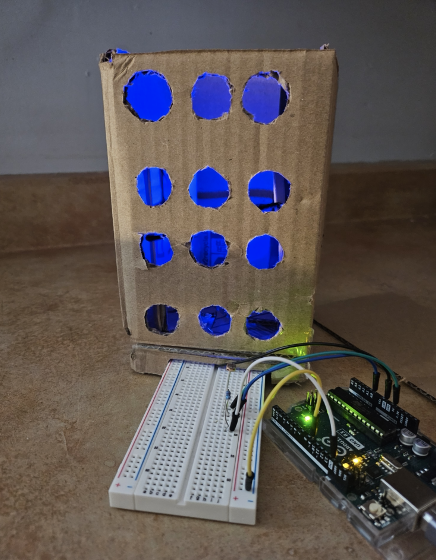

Somatic Design Project 1
A sleeping lamp that me and my team designed for the Maker Lab class.
Summary of the somatic design project
The project's goal was to create a product that engages with a user's somatic senses, and to incorporate an electrical component. We chose to make a sleeping lamp because it is a simple item that can enhance sleeping. We kept in mind how the user may interact with the sleeping lamp and chose our materials accordingly. There were minor technical issues, but we overcame it and created a better product than what we wanted.
Description of the design problem
The design problem at hand is sleep. Some users, especially students, have a hard time falling asleep. We wanted to create a solution that helps the user solve this problem. To do so, we came up with a sleeping lamp that is different from the usual sleeping lamps in the market, and engages with the user's somatic senses. My role in the design process was to help brainstorm with the team and to make the prototype out of cardboard.
Review of each step in the design process
First, we made it clear what we wanted in this lamp. We wanted it to be a modern, sleek lamp that emits a blue light that "breathes". This design choice is so that it is not distracting, and the light is intended to calm the user down. I then created the prototype out of cardboard, wooden spoons, and some rubber bands. This makes the product eco-friendly as it was created with recycled materials. When it was time to add the buttons on, it wasn't working. Fortunately, the ELEGOO Fun Kit came with many components so we replaced it with a potentiometer -- still no luck. We eventually decided on the photoresistor, which finally worked. This was better than our original idea of being able to control the brightness using the button. Now, the user can control the brightness of the lamp using the brightness of their own room. This makes it more accessible as well since it is hands-free. This prototype engages with the user's visual and kinaesthetic senses through the blue LED light, and how it is hands-free.
Concluding evaluation of the final design
The final design wasn't exactly what we were expecing it to be, but it worked better. If we were to continue this design in the future, I would add a timer function so users can set it to turn off once they're asleep, and different color options so it is more customizable.
What did you accomplish through your involvement in the somatic design projects?
I learned how to design with accessibliity and the somatic experience in mind.
What challenges did you and your group encounter?
We encountered the problem of buttons not working.
What did you do differently to respond to these challenges?
We replaced the button with a potentiometer, which did not work. Then, we used a photoresistor instead.
Which aspects of the design process worked, and why?
The photoresistor provided an accessibility feature that we didn't think of earlier in the design process. This allowed us to elevate our design, making it so that the user doesn't have to press a button.
Which aspects of the design process did not work, and why?
Everything worked out fine.
What did you learn from your involvement in the design process?
I learnt how to turn ideas into real working prototypes, and solve problems.
How does the design process contribute to your evolution as a UX Designer?
The design process helped me understand what the user's needs are and how it can be met, and improve my problem-solving and creative skills.